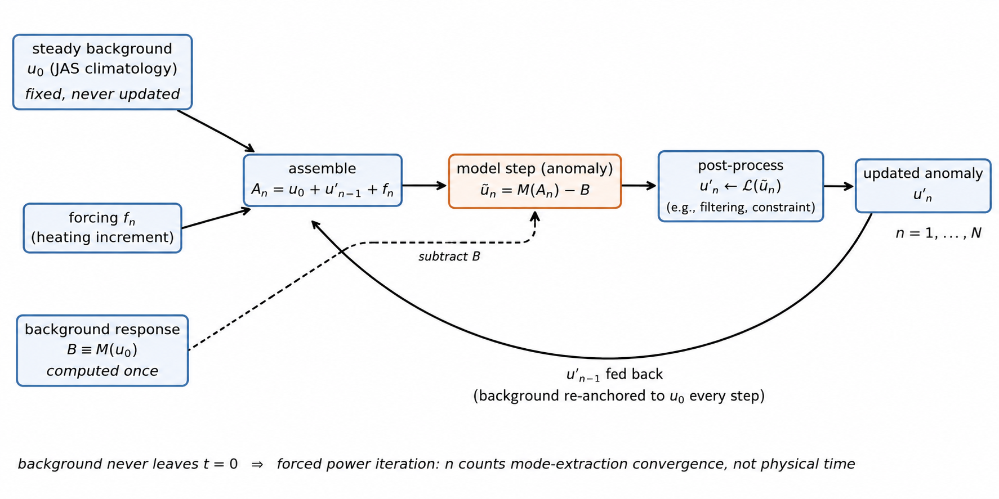
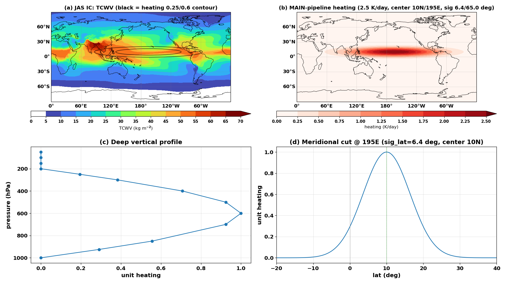

2. Methodology#
這是全文的重點章節（你與合作者共同發展的方法）。結構：
2.1 模式與背景場 —— Pangu（24h / 6h 兩種算子）與 FCNv2；特別點明 Pangu 輸入「沒有」太陽天頂角、
TOA 輻射或時間戳，是純空間映射 X_t → X_{t+Δt}，這個事實在 §3.6（6h vs 24h）會用到。
背景場用 ERA5 1979–2019 JAS 氣候平均（平滑、無天氣系統 → 擾動才不會被綜觀混沌淹沒）。
2.2 擾動框架的數學核心 —— perpetual background re-centering 遞迴式 + Taylor 展開，
說明擾動增長來自哪些項（J 的不穩定方向 + 非線性整流項），以及為什麼扣 B 能「精確」去除模式漂移。
2.3 迭代指標 n 的詮釋（關鍵誠實聲明）—— 背景永遠鎖在 t=0、無波流交互作用；整個演算法在數學上
是對單步算子 M 在 u0 點的「非線性奇異向量冪次疊代」；n 是模態萃取的收斂次數、不是物理天數；
這正是我們保留 "semi-linear" 這個名字的原因；並宣告「模態萃取序列 vs 觀測時間演化」的
可比較性是本文要說清楚的目標之一（§3.7、§4 收尾）。
圖編號（依你指示調整）：Fig. 1 = 方法示意圖（§2.2）；Fig. 2 = 四合一強迫圖 (a)背景TCWV+加熱
框 (b)水平加熱 (c)Deep垂直分布 (d)經向剖面（§2.4）；原本單獨的背景場圖已移除（與 Fig. 2a 重複），
完整背景場留在 Appendix A。
2.4 非絕熱加熱 —— 水平：高斯橢圓（σφ≈6.4°、σλ≈65°，中心 10°N/195°E；cos 波瓣替代版
移到 Appendix B，註明源自 Hakim & Masanam 的做法、結果無明顯差異）；垂直：
Deep = sin(π(p−200)/800)，出自 Chen & Masunaga 2025 Fig. 2b 的 EOF1；2.5 K/day、
全程持續加熱（非 7 天脈衝；依 config_used：主線/profile/振幅 step1 全 20 天，
denial 套組與 DJF 為 16 天）；離散脈衝 ≈ 連續加熱率。振幅段落已同步新 B.2 掃描
（2.5 近最優；0.5–1 under-forced；5–10 overdriven）。
2.5 實驗組 —— Step 1–4（標準 / 鎖水氣 / 只給水氣 / 鎖風）+ 外部模態 vs 邊界層加熱對 +
DJF 季節對照 + 振幅掃描 + 24h vs 6h。
2.6 診斷 —— 直接對 u' 取渦度的合法性（curl 線性）、TCWV、混沌敏感性警語。
2.7 觀測資料 —— HIMAWARI / ASRAD。
2.1 Models and background states#
We use two independently trained global DWP models as our “laboratory atmospheres.” The primary model is Pangu-Weather (Bi et al. 2023), a 3D Earth-specific transformer operating on 13 pressure levels (1000–50 hPa; five upper-air variables \(z,q,T,u,v\)) plus four surface fields (MSLP, \(u_{10}\), \(v_{10}\), \(T_{2m}\)) on a 0.25° grid. Pangu is distributed as a family of fixed-lead operators; we use the 24-h operator for all headline experiments and the 6-h operator for the time-step sensitivity test of Section 3.6. The secondary model is FourCastNet v2 (FCNv2; Bonev et al. 2023), a spherical Fourier neural operator with 73 channels including a native total-column-water-vapor (TCWV) channel.
Two architectural facts are load-bearing for the interpretation of our results. First, Pangu’s inputs contain no solar zenith angle, no top-of-atmosphere radiation, and no timestamp of any kind: the trained network is a pure spatial mapping
with no knowledge of local solar time. Any diurnal information the operator carries must therefore be implicit in the statistics of its training transitions, a point to which we return in Section 3.6. Second, Pangu carries no moisture column integral, so TCWV must be diagnosed as \(\mathrm{TCWV} = g^{-1}\int q\, dp\); FCNv2 carries TCWV natively. We verified that the two definitions agree on identical states to within an RMSE of \(\sim 3.6\ \mathrm{kg} \cdot \mathrm{m^{-2}}\) (Appendix A), so that moisture responses can be compared across models. Moisture forcing is specified once, as a specific-humidity rate, and converted to each model’s native variables (\(q\) for Pangu; relative humidity plus the consistent TCWV increment for FCNv2, using the background temperature for the conversion).
The background (basic) state \(u_0\) is the 1979–2019 July–September (JAS) climatological mean built from ERA5 (Hersbach et al. 2020). A seasonal climatology has two virtues as a basic state. Dynamically, it contains a realistic, zonally elongated summer ITCZ / monsoon-trough shear zone in the Northern Hemisphere — the substrate the instability needs (Section 3.3 shows the response collapses when the winter climatology is used instead). Methodologically, it is smooth: it contains no individual synoptic systems, so a free-running forecast from it does not immediately spin up weather that would swamp the perturbation signal. The choice of season proves to be a controlling parameter, and we treat it as part of the experiment design rather than a technicality. The background’s column moisture, with the heating footprint of Section 2.4 overlaid, is shown in Fig. 2a; the full background fields are documented in Appendix A.
2.2 The perturbation framework: perpetual background re-centering#
We wish to measure how a perturbation grows about the fixed basic state \(u_0\) under the full nonlinear model operator \(M\). A free rollout of \(M\) from \(u_0+\delta\) will not do: the trajectory drifts away from \(u_0\) (both through the model’s climate drift and through genuine synoptic development), and after a few steps the “perturbation” is measured about a background that no longer exists. Hakim and Masanam (2024) addressed this by constructing steady backgrounds; we extend their approach into a recursive scheme that keeps the background steady for arbitrarily many steps while letting the perturbation evolve nonlinearly.
Let \(M\) denote one model step (24 h unless stated), \(u_0\) the steady background, \(f_n\) the forcing increment added at step \(n\) (Section 2.4), and \(u'_n\) the perturbation carried across steps. Define the frozen one-step drift
computed once. The iteration is
with \(u'_0 = 0\) for the standard experiment and \(\mathcal{L}\) an optional channel-locking operator used only in the mechanism-denial experiments (Section 2.5). The loop is sketched in Fig. 1. Three properties make this scheme suitable:

Fig. 1: The perpetual background re-centering loop.
The input to \(M\) is always anchored to \(u_0\). The model never sees a free-running trajectory, so the smooth background cannot spin up synoptic-scale “weather” of its own.
The constant drift is removed exactly. Because the background part of the input is identically \(u_0\) at every step, its image under any map is identically \(B\); subtracting \(B\) therefore removes the model’s one-step climate drift without linearization error. (This exactness is a property of re-anchoring, not of any small-amplitude assumption.)
The perturbation evolves fully nonlinearly. No Jacobian is ever formed or applied; \(M\) acts on the complete state \(u_0+u'+f\).
The mathematical content of the scheme is seen by Taylor-expanding \(M\) about \(u_0\). Writing \(\mathbf{J} \equiv \partial M/\partial x \,|_{u_0}\) and \(\mathbf{H} \equiv \partial^2 M/\partial x^2\,|_{u_0}\), and letting \(\delta_n \equiv u'_{n-1} + f_n\) denote the total departure fed to the model at step \(n\),
This expansion identifies the two engines of perturbation growth. The linear term \(\mathbf{J}\delta_n\) contains the classical instability: directions of state space in which the linearized one-step map about the ITCZ basic state has amplification factors exceeding unity — for our problem, the barotropic instability of the heated vorticity strip. The higher-order terms are the rectified nonlinear contributions: vortex merger and axisymmetrization, the finite-amplitude saturation of the roll-up, and the wind–moisture coupling in which perturbation winds converge background moisture that in turn modifies the perturbation heating response. At the amplitudes we force ( \(\lVert \delta \rVert\) set by a \(2.5 \mathrm{K} \cdot \mathrm{day^{-1}}\) heating sustained throughout the experiment), these quadratic-and-higher terms are essential and active; the method coincides with a tangent-linear calculation only in the formal limit \(\lVert\delta\rVert \to 0\), which we are deliberately not in. Following the usage established for this class of experiment we nevertheless refer to the scheme by the shorthand semi-linear; the next subsection explains why that name, understood correctly, is apt.
2.3 Interpretation: a nonlinear power iteration, not a forecast#
The defining feature of the recurrence above — and the point on which its interpretation hinges — is that the background is re-anchored to \(u_0\) at every step. The background state therefore never leaves \(t=0\): however large the perturbation grows, it is never permitted to modify the flow upon which it grows. By construction there is no wave–mean-flow interaction in this system.
This has a precise mathematical consequence. If \(M\) were linear, the iteration \(u'_n = \mathbf{J}(u'_{n-1} + f_n)\) would be a forced power iteration, whose homogeneous part converges (up to normalization) to the eigenvector of \(\mathbf{J}\) with the largest modulus eigenvalue — the fastest-growing mode of the one-step operator about \(u_0\). Our iteration is the fully nonlinear analogue: repeated application of \(M\), always re-centered on the same \(u_0\), selects and amplifies the fastest-growing finite-time structure of \(M\) about the point \(u_0\), saturating at finite amplitude through the \(O(\lVert\delta\rVert^2)\) terms. In this sense the converged pattern is a nonlinear singular vector of the single-step operator at the basic state, extracted by power iteration.
It follows that the iteration index \(n\) must not be read as physical atmospheric time. Although each application of \(M\) is nominally a 24-h integration — and we will write “nominal day \(n\)” for readability — the sequence \(n = 1, 2, \dots, N\) is the convergence history of a mode-extraction algorithm: early iterations are dominated by the projection of the forcing onto the growing structure, intermediate iterations by quasi-exponential amplification, and late iterations by nonlinear saturation. A real atmosphere evolving over fifteen days would meanwhile change its own background state profoundly; ours is locked to the JAS climatology throughout. This is exactly the sense in which the method deserves the name semi-linear: as in classical linear instability analysis, we study the growth of perturbations about a prescribed, fixed basic state — except that the operator applied to the perturbation is the full nonlinear \(M\) rather than its linearization.
This interpretation imposes a discipline on how the results may be compared with observations, and we state it here as one of the declared aims of the paper: to establish the conditions under which the spatial convergence sequence of such a mode extraction can be meaningfully placed beside an observed temporal evolution. The comparison is defensible only to the extent that (i) the observed background (here, the monsoon trough) is quasi-stationary over the observed interval, so that nature is approximately running a fixed-background instability problem too, and (ii) the comparison is made at the level of the converged mode structure — the wavenumber, spacing, latitude, and morphology of the vortex chain — rather than as a step-by-date alignment. Section 3.7 applies this standard.
2.4 Diabatic forcing#
The forcing \(f_n\) is an idealized ITCZ-scale heating added to the temperature field at every step during the forcing period. It is separable in the horizontal and vertical.
Horizontal structure. The heating is centered at 10°N, 195°E, in the western–central Pacific, with a separable Gaussian envelope
i.e., an ITCZ-scale zonally elongated ellipse spanning roughly 5–25°N and a wide Pacific sector (Fig. 2b; its meridional cross-section in Fig. 2d). An alternative cosine-lobe envelope, adapted from the forcing construction of Hakim and Masanam (2024), was also tested; the character of the breakdown is the same under both (the amplitude scales with the net delivered heating), and the comparison is given in Appendix B.

Fig. 2: The forcing and its background. (a) JAS climatological TCWV with the heating footprint contoured in black (0.25 and 0.6 of the peak rate); (b) horizontal structure of the applied Gaussian heating (\(2.5 \mathrm{K} \cdot \mathrm{day^{-1}}\) peak, centered at 10°N, 195°E); (c) the Deep vertical profile \(Q(p)\); (d) meridional cross-section of the envelope at 195°E.
Vertical structure. The vertical profile is the deep-convective mode
which peaks at 600 hPa and vanishes at 200 and 1000 hPa (Fig. 2c). This profile is adopted as the leading EOF of observed diabatic heating over tropical oceans: Chen and Masunaga (2025, their Fig. 2b) show that the first EOF of the \(Q_1\) vertical structure in the convectively active tropics is a deep, single-signed mode of essentially this shape. Alternative profiles (stratiform, shallow, and vertically uniform) are used in the sensitivity experiments of Section 3.3.
Amplitude and duration. The heating rate is \(2.5 \mathrm{K} \cdot \mathrm{day^{-1}}\) at the horizontal and vertical maximum, applied as a discrete increment at each step (+2.5 K per 24-h step; +0.625 K per 6-h step). We treat this discrete pulse as an approximation to a continuous diabatic heating rate acting over the step — the same convention used for the moisture source in Step 4. The heating is sustained at every iteration for the full length of each experiment (\(N = 20\) for the headline run and the profile and amplitude sensitivity runs; \(N = 16\) for the mechanism-denial suite and the seasonal control), maintaining the strip against dissipation while the instability develops upon it. Amplitude is a genuinely calibrated quantity: the sweep of Appendix B.2 places the headline \(2.5\ \mathrm{K} \cdot \mathrm{day^{-1}}\) near the amplitude that maximizes the organized vortex response — \(0.5 - 1\ \mathrm{K} \cdot \mathrm{day^{-1}}\) under-force the strip (weaker, later peaks), while by \(5 - 10\ \mathrm{K} \cdot \mathrm{day^{-1}}\) the system is overdriven and the clean roll-up degrades.
2.5 The experiment suite#
The headline experiment and its mechanism-denial variants form a four-step suite, distinguished by the initial perturbation, the forcing, and the locking operator \(\mathcal{L}\):
Step |
Name |
\(u'_0\) |
Forcing |
\(\mathcal{L}\) (per step) |
|---|---|---|---|---|
1 |
Standard breakdown |
0 |
sustained heating |
none |
2 |
Moisture locking |
0 |
sustained heating |
moisture channels of \(u' \to 0\) |
3 |
Moisture-only initialization |
day-7 moisture anomaly from Step 1 |
none |
none |
4 |
Wind locking |
day-7 moisture anomaly |
persistent moisture source |
wind channels of \(u' \to 0\) |
The locking operator acts on the perturbation, zeroing the designated channels after every step, so that (for example) in Step 2 the model always sees the background moisture field: any moisture–dynamics feedback is denied while the thermal forcing proceeds untouched. Steps 3 and 4 probe the converse: whether a moisture anomaly alone (with and without the winds it would otherwise induce) can excite the instability. Together the four steps factor the coupled growth into its wind and moisture pathways.
Beyond the suite, four families of controls are run: (i) a seasonal control — the identical experiment on the DJF climatology, which tests whether the response is set by the background ITCZ rather than by the forcing; (ii) an external-mode versus boundary-layer heating pair, which places the heating either in the barotropic (external) vertical mode or in the boundary layer alone (Section 3.4; Appendix B.5); (iii) an amplitude sweep (\(0.5 - 10 \mathrm{K} \cdot \mathrm{day^{-1}}\); Appendix B.2); and (iv) a time-step control repeating Step 1 with the 6-h Pangu operator (Section 3.6). The full suite is run on both Pangu and FCNv2.
2.6 Diagnostics#
The primary diagnostics are the 850-hPa perturbation relative vorticity \(\zeta'_{850}\) and the perturbation column water vapor \(\mathrm{TCWV}'\). Because the curl is a linear operator, computing \(\zeta'\) directly from the perturbation winds is exact — \(\zeta(u') = \zeta(u' + B) - \zeta(B)\) — which we verified numerically to machine precision (\(\sim10^{-7}\) relative). Time series of the domain peak values (within the forced sector) track the growth and saturation; snapshot panels at selected iterations show the spatial morphology.
One caveat governs all point-wise comparisons. The breakdown is a chaotic instability: a 0.2 K change in the initial perturbation lowers the day-12 spatial correlation of the vorticity field to 0.42, even though the statistics (peak amplitude, number and spacing of vortices, latitude of the chain) are robust. All comparisons in this paper — against the reference experiment and against observations — are therefore made at the level of structure and statistics, never of exact vortex positions.
2.7 Observational data#
The observational counterpart uses full-disk imagery from the Himawari geostationary satellite, retrieved from the PCCU/ASRAD archive at daily 00Z: the water-vapor channel and the infrared window channel. Two western North Pacific events are documented: the primary case of 5–14 November 2024, in which the monsoon trough discretized into four coexisting tropical cyclones (Yinxing, Toraji, Usagi, Man-yi), and a secondary case of 30 August – 6 September 2023 (Saola, Haikui, Kirogi, with Yun-yeung forming to the east). For each event we archive the daily full-disk frames, tropical western Pacific crops, and multi-day roll-up montages (Section 3.7; Appendix C).